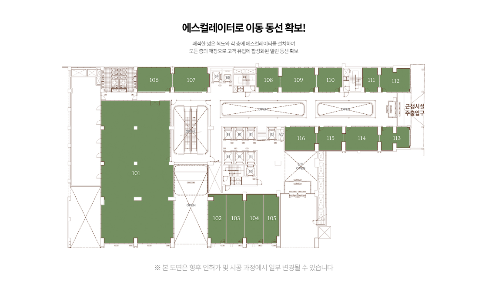

1. 역세권은 ‘가까움’보다 ‘편하게 도착하는가’가 중요합니다
지하철역에서 짧은 거리라도 외부 도로를 돌아가거나 횡단보도를 여러 번 건너야 한다면 체감 접근성은 떨어질 수 있습니다.
반대로 지하철과 건물이 연결되고 상가 내부로 자연스럽게 이어지는 구조라면 목적형 고객의 방문 편의를 높일 수 있습니다.
2. 양정역 직통 연결은 연결 이후 동선까지 봐야 합니다
제공자료에는 양정역 1호선과 직통 연결되는 상업시설로 안내되어 있습니다.
하지만 연결 통로에서 모든 호실이 똑같이 보이는 것은 아닙니다. 연결부와 가까운지, 상층부로 올라가는 에스컬레이터가 어디에 있는지, 고객이 이동하면서 내 점포를 실제로 보게 되는지 확인해야 합니다.

※ 본 사이트 내에 사용된 이미지는 소비자의 이해를 돕기 위해 참고용으로 제작된 것으로 실제 시공 시 다를 수 있습니다.
3. 에스컬레이터는 유동을 만들고 엘리베이터는 목적형 이동을 돕습니다
보행 고객은 에스컬레이터를 따라 자연스럽게 층간 이동할 가능성이 있고, 병의원이나 교육처럼 목적지가 명확한 고객은 엘리베이터를 더 많이 사용할 수 있습니다.
따라서 업종에 따라 어느 이동수단과 가까운 호실이 유리한지가 달라질 수 있습니다.
4. 상층부 상가는 ‘목적형 방문’과 궁합을 봅니다
1층 유동이 많다고 해서 모든 업종이 1층에 있어야 하는 것은 아닙니다.
병의원, 교육, 뷰티, 전문서비스처럼 고객이 목적을 가지고 방문하는 업종은 가시성보다 엘리베이터 접근, 주차연결, 안내사인이 더 중요할 수 있습니다.
5. 차량 고객은 주차 후의 이동이 더 중요합니다
쾌적한 주차환경이 마련되어 있어도 주차장에서 점포까지 이동이 복잡하면 체감 편의는 떨어질 수 있습니다.
주차장 엘리베이터가 어느 층의 어디로 연결되는지, 초행 고객이 쉽게 찾는 구조인지, 보호자 동반 고객이 이동하기 편한지를 현장에서 확인하는 것이 좋습니다.

※ 본 사이트 내에 사용된 이미지는 소비자의 이해를 돕기 위해 참고용으로 제작된 것으로 실제 시공 시 다를 수 있습니다.
6. 간판 노출과 시야도 이동동선의 일부입니다
고객이 점포 바로 앞을 지나가더라도 간판이 보이지 않거나 출입구 방향과 시야가 어긋나면 인지하기 어렵습니다.
코너 호실, 복도 폭, 천장 사인 설치 가능 여부, 점포 전면이 어느 방향을 향하는지까지 함께 확인해야 합니다.
7. 현장 방문은 시간대를 바꿔보는 것이 좋습니다
출근시간, 점심시간, 퇴근시간, 주말의 이동은 서로 다를 수 있습니다.
양정역 이용객이 어느 방향으로 빠지는지, 주변 관공서와 주거지에서 유입되는 보행이 언제 많아지는지 여러 시간대에 확인하면 상권의 성격을 더 현실적으로 파악할 수 있습니다.
8. 결국 좋은 역세권 상가는 ‘찾기 쉬운 호실’입니다
양정역과 가깝다는 조건은 출발점입니다.
최종적으로는 고객이 역이나 주차장에서 내린 뒤 길을 헤매지 않고 점포에 도착할 수 있는지, 다시 방문할 때 기억하기 쉬운지가 중요합니다. 상가분양에서는 이러한 동선을 호실별로 비교해야 합니다.

※ 본 사이트 내에 사용된 이미지는 소비자의 이해를 돕기 위해 참고용으로 제작된 것으로 실제 시공 시 다를 수 있습니다.